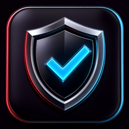
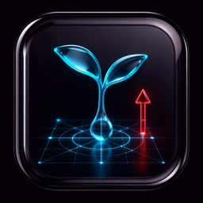
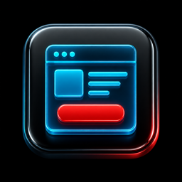
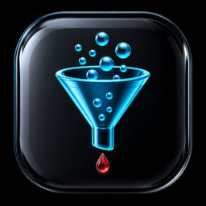
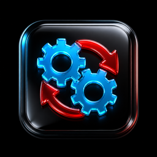
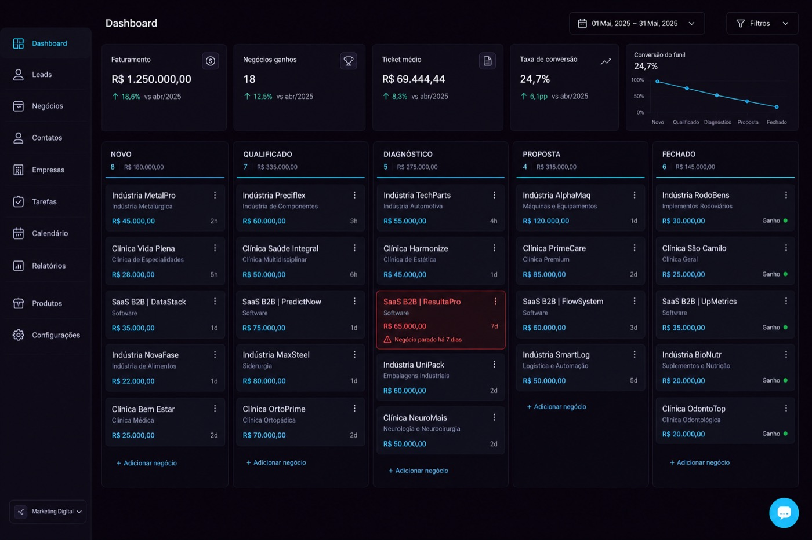
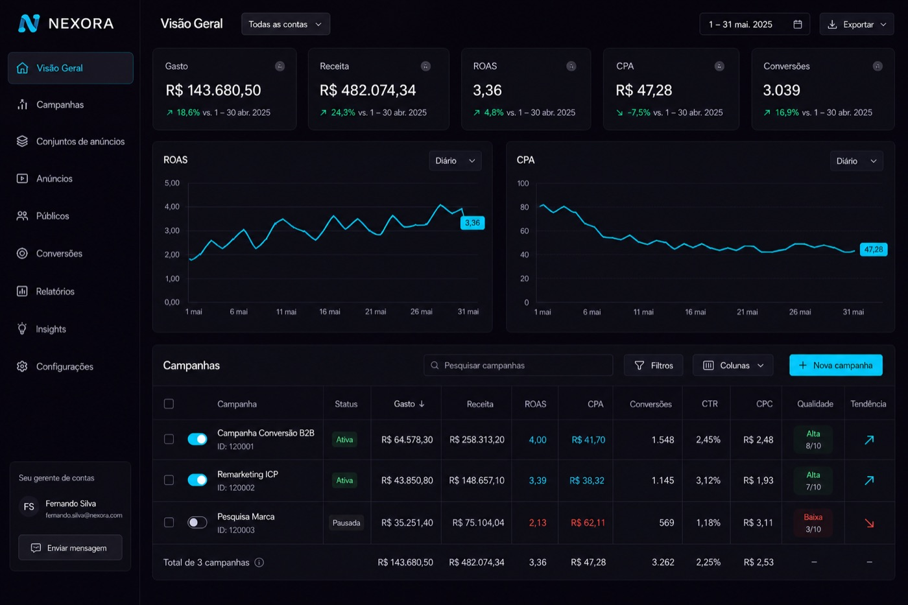

Tráfego avançado não salva processo comercial quebrado. Nós resolvemos os dois.
Paramos de apenas gerar cliques. Unimos tráfego pago de alta performance, landing pages de extrema velocidade, API oficial de WhatsApp e treinamento de vendas integrado ao seu CRM. Leads qualificados de verdade e equipe comercial produtiva.

Ex-investidor da maior assessoria de marketing do país
Tráfego de alta performanceLanding pages < 1.8sAPI oficial de WhatsAppCRM ativoTreinamento comercialTráfego de alta performanceLanding pages < 1.8sAPI oficial de WhatsAppCRM ativoTreinamento comercial
Bifurcação de consciência
Por onde você entra?
Dois caminhos. O mesmo diagnóstico. Escolha o que descreve o seu momento — a conversa muda a partir daí.

Caminho A · Quero começar
Ainda não invisto em tráfego
Construa uma máquina de vendas previsível do absoluto zero
Se você quer parar de depender de indicações ou do boca a boca, estruturamos a máquina de atração do zero. Sem jargão, sem milagre. Anúncios, páginas limpas e atendimento de leads para faturar com segurança.
Orçamento seguroIniciamos com testes de baixo orçamento até validar o público-alvo.

Estrutura prontaCriamos landing pages e integrações sem você precisar entender de tecnologia.
Processo mastigadoEnsinamos exatamente como o atendente deve qualificar o lead no WhatsApp.
Audite seus anúncios e pare de rasgar dinheiro com leads frios
Chega de relatório de cliques com caixa vazio. Auditamos as contas, limpamos o tráfego ruim, integramos o CRM com a API oficial do WhatsApp e treinamos o time para fechar mais.
Auditoria de contasEncontramos os gargalos ocultos nos gerenciadores de anúncios.

Tecnologia de filtroFormulários com enriquecimento de dados e qualificação avançada.

Sincronia comercialTreinamento, roteiros e CRM ativo para rastrear cada centavo investido.
Luiz Amaral é ex-investidor da maior assessoria de marketing do país. A tese da amaral.ads nasce do maior gargalo que ele viu em empresas brasileiras: anúncio bonito e comercial desconectado. O trabalho aqui não termina no clique — termina no faturamento.
Por isso o diagnóstico olha os dois lados: a conta de anúncios e o funil de vendas. Sem métrica de vaidade. Sem “o algoritmo mudou”.
Ex-investidor da maior assessoria do paísGrowth B2B de ponta a pontaFoco em ROI real
Os 3 pilares do growth
O modelo de agência faliu. O ecossistema não.
Tráfego sozinho não fecha. CRM sozinho não atrai. Os três pilares precisam rodar juntos.
Atração inteligenteTráfego & SEO
→
Conversão tecnológicaAPI WhatsApp & LPs
→
Fechamento comercialCRM & treinamentos
Atração de alta precisão
Gerenciamento cirúrgico de Meta Ads, Google Ads e SEO B2B. Criativos nas dores do ICP — só clica quem tem interesse e poder de compra.
Por que funciona. Não buscamos clique. Buscamos o cliente certo na frente da oferta certa.
Conversão tecnológica
Landing pages otimizadas para mobile e automação via API oficial do WhatsApp. Página lenta mata metade do clique antes de ver o telefone.
Por que funciona. Páginas leves, abaixo de 2s, ligadas a fluxos que respondem em milissegundos.
Fechamento e CRM
Implementação de ActiveCampaign, RD Station, Kommo ou Pipedrive, roteiros sob medida e treino prático da equipe comercial.
Por que funciona. Lead na planilha não paga conta. Abordagem ativa, funil vivo, nenhum contato esquecido.
Mockups de operação
Decisão com dado na mesa.
Cliente avançado não compra discurso. Compra funil visível e conta de anúncio lida com critério.

CRM com funil vivo
Cada lead em uma etapa. Nada esquecido no WhatsApp pessoal do vendedor.

Gerenciador de anúncios limpo
Campanha que paga e campanha que queima — lado a lado, sem métrica de vaidade.
FAQ inteligente
Objeções de 2026, respondidas.
As cinco perguntas que travam o diagnóstico — dos dois perfis.
Quanto preciso investir em anúncios de início?
O investimento é proporcional ao tamanho do seu mercado e à sua meta de vendas. Para empresas iniciantes, recomendamos começar de forma enxuta para validar a oferta antes de acelerar. Para empresas maduras, analisamos o Custo de Aquisição de Clientes (CAC) ideal para escalar com segurança.
Eu já tenho um time comercial / vendedor. Como vocês ajudam?
Nós não substituímos seu time comercial, nós o tornamos 3x mais produtivo. Fornecemos os roteiros de criativos, scripts de abordagem rápidos para o WhatsApp e organizamos o funil do CRM para que seus vendedores saibam exatamente para quem ligar e como conduzir o fechamento.
Em quanto tempo começamos a ver os leads chegando?
A estrutura inicial de tráfego e landing pages premium é implementada em até 15 dias. Uma vez ativos os anúncios, os leads começam a entrar em até 48 horas. A otimização fina do funil ocorre nas semanas seguintes com base em dados de vendas reais.
Minha equipe não sabe usar CRM. O que eu faço?
Nós fazemos a configuração técnica completa, desenhamos as etapas de vendas no CRM e oferecemos um treinamento prático e didático para a sua equipe comercial. Deixamos a ferramenta pronta e fácil para que seu time só precise mover os cards e registrar as vendas.
Qual a diferença entre a Amaral Ads e uma agência de marketing comum?
Agências comuns entregam relatórios de cliques e dizem que o trabalho delas acabou. Nós somos uma assessoria de Growth. Nos envolvemos diretamente com o seu faturamento: analisamos desde o clique do anúncio até a velocidade da página, a resposta da automação do WhatsApp e a taxa de fechamento dos seus vendedores.
Diagnóstico comercial gratuito
25 minutos. Anúncios e funil na mesma mesa.
Sem compromisso. A sessão aponta o que fazer primeiro — começar do zero com segurança ou auditar o que já queima verba.
Sessão individual de 25 minutos
Análise de anúncios e funil de vendas
Resposta em horário comercial, direto com o especialista